ABACBS18
ABACBS 2018 conference
2019-07-12 14:50:10
Parameters
| Parameter | Value |
|---|---|
| hashtag | #ABACBS2018 |
| start_day | 2018-11-26 |
| end_day | 2018-11-28 |
| timezone | Australia/Sydney |
| theme | theme_light |
| accent | #dd0c15 |
| accent2 | #EE858A |
| kcore | 2 |
| topics_k | 6 |
| bigram_filter | 3 |
| fixed | TRUE |
| seed | 1 |
1 Introduction
An analysis of tweets from the #ABACBS2018 hashtag for the Australian Bioinformatics and Computational Biology Society conference, 26-28 November 2018 at The University of Melbourne, Melbourne Australia
A total of 1596 tweets from 248 users were collected using the rtweet R package.
2 Timeline
2.1 Tweets by day
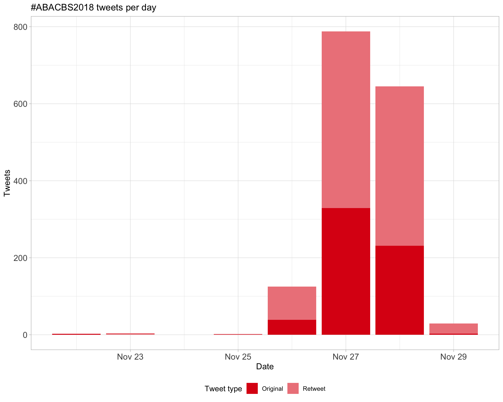
2.2 Tweets by day and time
Filtered for dates 2018-11-26 - 2018-11-28 in the Australia/Sydney timezone.
3 Users
3.1 Top tweeters
Overall
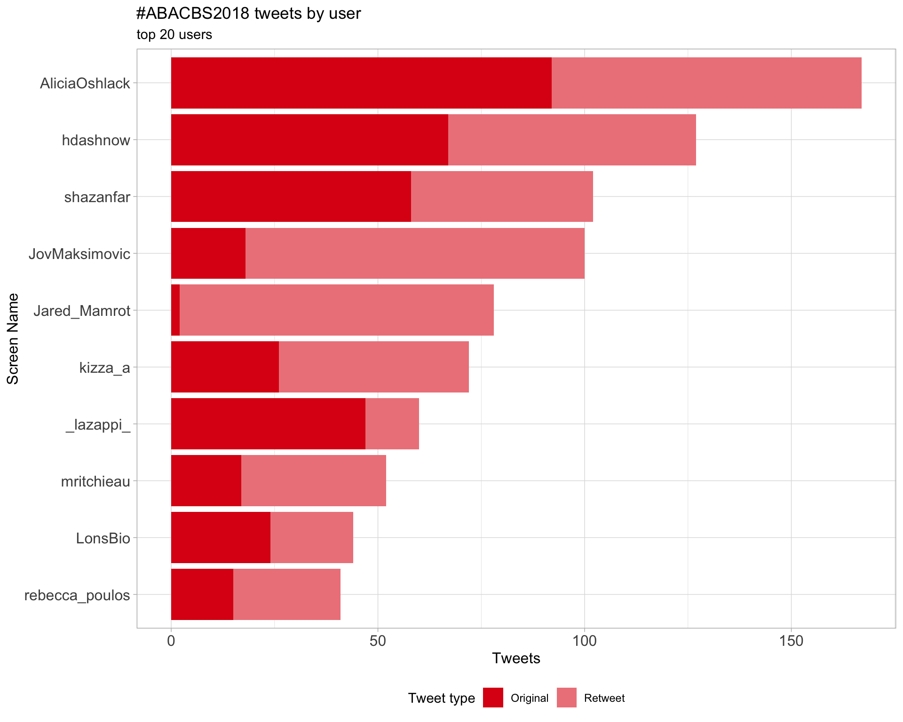
Original
Retweets
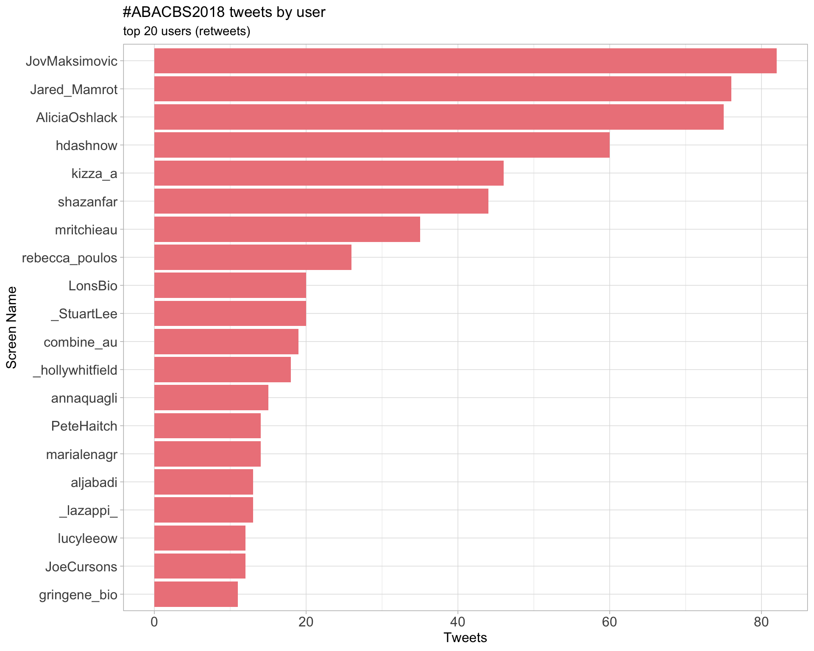
3.2 Retweet proportion
3.3 Top tweeters timeline

3.4 Top tweeters by day
Overall
Day 1
Day 2

Day 3
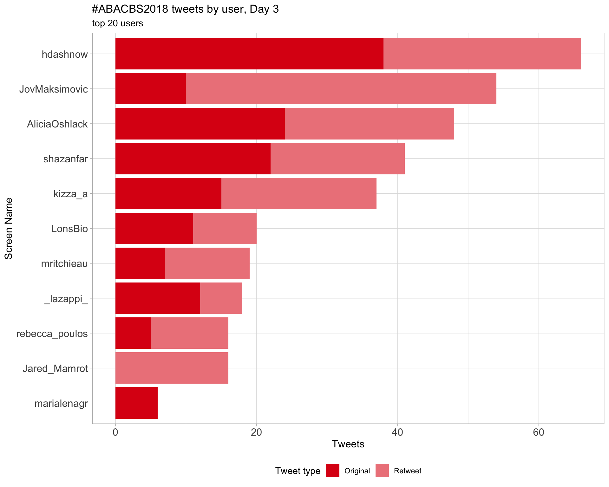
Original
Day 1

Day 2

Day 3

Retweets
Day 1
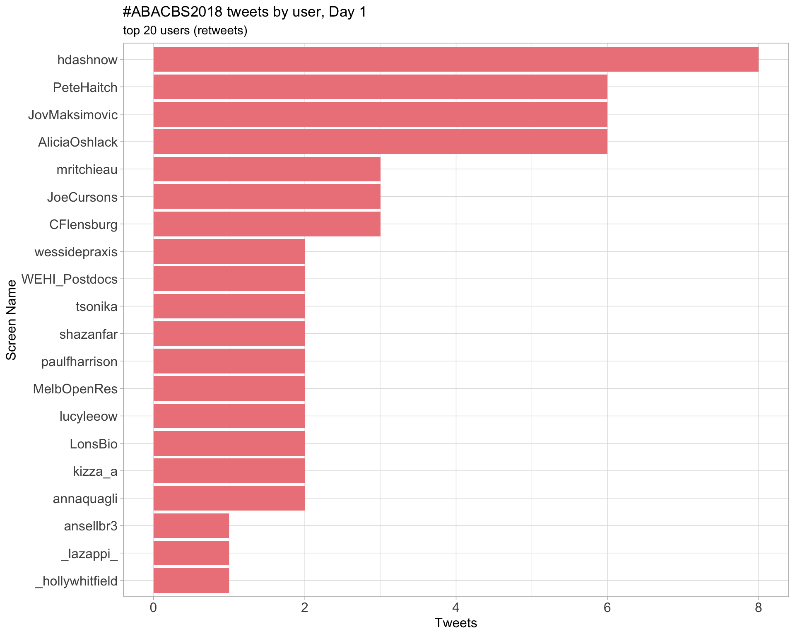
Day 2
Day 3
4 Sources
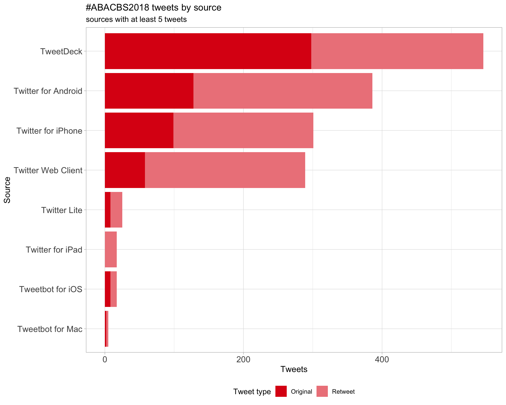
5 Networks
5.1 Replies
The “replies network”, composed from users who reply directly to one another, coloured by PageRank.

5.2 Mentions
The “mentions network”, where users mention other users in their tweets. Filtered for a k-core of 2. Node colour and size adjusted according to PageRank score.

6 Tweet types
6.1 Retweets
Proportion

Count

Top 10
| screen_name | text | retweet_count |
|---|---|---|
| AliciaOshlack |
If you are interested in joining my lab for a post-doc in research bioinformatics have a chat to me or message me at #abacbs2018 #COMBINE18 https://t.co/404MibRFnZ |
41 |
| davisjmcc | We’ll soon be advertising three new roles, so if you’re a postdoc with a computational PhD (or will be soon), or a bioinformatics or statistics Honours graduate, please get in touch! Tell your postdocs, students, friends! More info: https://t.co/sRoEMCI5Lv #ABACBS2018/#ABACBS18 | 20 |
| davisjmcc | Nancy Zhang has given by far the most persuasive argument for an expression recovery (“imputation”) tool for scRNA-seq data I’ve seen. SAVER superiority confirmed by indep’t analysis from @talandrews and @m_hemberg in recent F1000 paper #abacbs2018 | 17 |
| davisjmcc |
#ABACBS2018/#ABACBS18 has been a delightful re-entry for me into the Aus bioinf/comp bio community after 7 years in UK. I’m back to lead a new research group at @SVIResearch and @unimelb, working on all things #singlecell, with a big interest in genetics and methods development. |
16 |
| mritchieau | Charity Law is unwell, so won’t be presenting at #abacbs2018, but you can read about her work on exploring intron signal at https://t.co/ip7TMoN34f. On the upside, the morning session is now back on time :) Get well soon Charity! https://t.co/lBrXREjZ4e | 15 |
| lazappi | #ABACBS2018 Award Winners - Early-career researcher @BelindaPhipson - Open science @torstenseemann - Professional bioinformatics Alex Garnham - Mid-career researcher David Lynn - Senior research fellow Mark Ragan | 14 |
| JovMaksimovic | Great to see the Illumina developing open source software #ABACBS2018 #byebyeblackbox https://t.co/GuD4iLys9i | 13 |
| PeteHaitch | Yingxin Lin showing, yet again, that students give amongst the best talks. Here, presenting scMerge for integrating scRNA-seq datasets #abacbs2018 üìù: https://t.co/7Y8fQGqL0T üíª: https://t.co/6lStKA8RWq | 13 |
| lazappi | Thanks @BelindaPhipson for mentioning @scRNAtools. Check it out here if you are interested https://t.co/EClP64fOU7. Submissions and updates welcome! #abacbs2018 | 12 |
| AliciaOshlack | Congratulations @torstenseemann for your open science award at #abacbs2018. Well deserved! | 11 |
Most retweeted
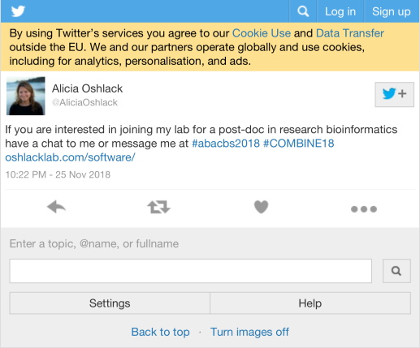
6.2 Likes
Proportion
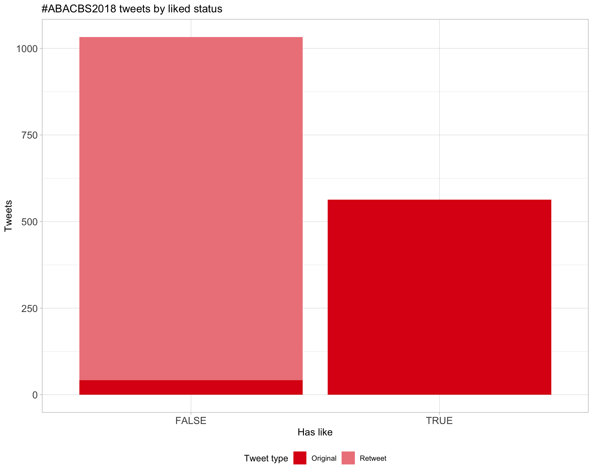
Count
Top 10
| screen_name | text | favorite_count |
|---|---|---|
| davisjmcc |
#ABACBS2018/#ABACBS18 has been a delightful re-entry for me into the Aus bioinf/comp bio community after 7 years in UK. I’m back to lead a new research group at @SVIResearch and @unimelb, working on all things #singlecell, with a big interest in genetics and methods development. |
62 |
| AliciaOshlack | Managed to get an Oshlack lab photo of the whole group at #abacbs2018 #loveit https://t.co/dmun9v1Ha7 | 58 |
| BelindaPhipson | Just wanted to thank @WEHI_research and @unimelb for subsidising childcare at #abacbs2018. Fantastic to have this support at conferences. | 57 |
| AliciaOshlack | Congratulations to @BelindaPhipson for winning the #abacbs2018 early career researcher award. There couldn’t be a more deserving winner #soproud | 55 |
| BelindaPhipson | Feel honoured to receive the ECR award at #abacbs2018. Thank you to my amazing mentors @AliciaOshlack and Gordon Smyth for nominating me. | 54 |
| davisjmcc | Nancy Zhang has given by far the most persuasive argument for an expression recovery (“imputation”) tool for scRNA-seq data I’ve seen. SAVER superiority confirmed by indep’t analysis from @talandrews and @m_hemberg in recent F1000 paper #abacbs2018 | 48 |
| hdashnow |
@theosysbio: “Data resuscitation” That’s an apt description of what Bioinformaticians do when they they are not engaged in the experimental design, but rather are asked to save the experiment. #abacbs2018 |
39 |
| cabbagesofdoom | Much deserved #abacbs2018 open source award to @torstenseemann - I’ve annotated multiple organisms with Prokka, and I’m a fan! | 39 |
| AliciaOshlack |
If you are interested in joining my lab for a post-doc in research bioinformatics have a chat to me or message me at #abacbs2018 #COMBINE18 https://t.co/404MibRFnZ |
34 |
| JovMaksimovic | Great to see the Illumina developing open source software #ABACBS2018 #byebyeblackbox https://t.co/GuD4iLys9i | 33 |
Most likes
6.3 Quotes
Proportion
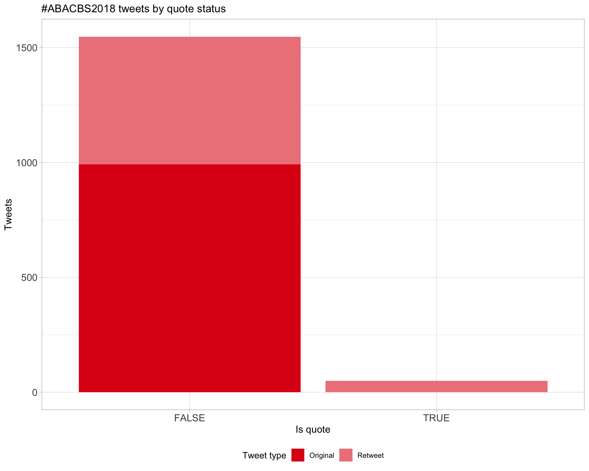
Count
Top 10
| screen_name | text | quote_count |
|---|---|---|
| shazanfar |
my current TweetDeck tab is ‚Äú#combine18 OR #combine2018 OR #abacbs18 OR #abacbs2018‚Äù maybe I should include the SNPs associated too üòÇü§¶‚Äç‚ôÄÔ∏è https://t.co/iBtt6sLApf |
2 |
| AliciaOshlack | Apparently the conference program has the hashtag at #abacbs2018 … Best to go with that and not #ABACBS18 I think https://t.co/Wq3VdV2jSn | 2 |
| AliciaOshlack | You can vote for @JovMaksimovic for post-doc rep at the #ABACBS2018 AGM soon https://t.co/6pEzWwJP3k | 2 |
| hdashnow | I’ve been burned by the short-deadline/part-time issue myself. Something we should all be aware of when promoting #WomenInScience #ABACBS18 #abacbs2018 #COMBINE18 https://t.co/Xt82J3Jp9X | 2 |
| mritchieau | singscore #bioconductor software available from https://t.co/vK9vsLOAnH #abacbs2018 https://t.co/W2KJePOvrv | 2 |
| Alimahmoudi29 | #abacbs2018 @S_Foroutan Singscore https://t.co/wx6GMYKt3r | 2 |
| shazanfar | Those at #abacbs2018 take note :D https://t.co/fGFHMlZQ57 | 2 |
| mritchieau | Want more #singlecells in Melbourne next July? #abacbs2018 https://t.co/fMo1nJ5DvL | 2 |
| _StuartLee |
For those that can’t make it to the workshop at #BiocAsia - you can still play along at home and learn about Granges. I’ve just posted solutions to the exercises. #abacbs2018 https://t.co/goTgwtl0n8 https://t.co/W7eMSFamZ4 |
1 |
| AliciaOshlack |
Maybe @abacbs can make a final call on this …remembering last year was #abacbs17 and this year we have #COMBINE18 #ABACBS18 vs #abacbs2018 https://t.co/qYHTa8edUf |
1 |
Most quoted
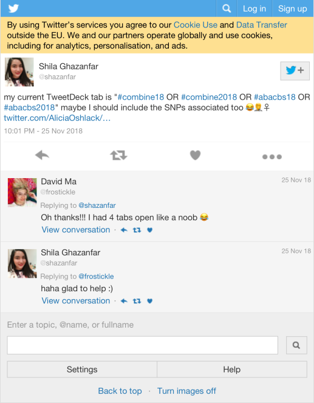
7 Media
Proportion

Top 10
| screen_name | text | favorite_count |
|---|---|---|
| AliciaOshlack | Managed to get an Oshlack lab photo of the whole group at #abacbs2018 #loveit https://t.co/dmun9v1Ha7 | 58 |
| JovMaksimovic | Great to see the Illumina developing open source software #ABACBS2018 #byebyeblackbox https://t.co/GuD4iLys9i | 33 |
| lazappi | #abacbs2018 international keynote @DunhamLab “Drivers of aneuploidy and adaptation in yeast” https://t.co/46wfHZhqMC | 30 |
| mritchieau | Charity Law is unwell, so won’t be presenting at #abacbs2018, but you can read about her work on exploring intron signal at https://t.co/ip7TMoN34f. On the upside, the morning session is now back on time :) Get well soon Charity! https://t.co/lBrXREjZ4e | 29 |
| RoxaneLegaie | As the Professional Bioinformaticians Representative at @abacbs and a co-organiser of the @RLadiesMelb, I couldn‚Äôt be any prouder of our Prof Bioinfo Award winner 2018‚Ķ Alex Garnham !! ü§óüéâüíÉüèºüí™üëè Congrats lady! üòéüëå #abacbs2018 https://t.co/ABt02OY59r | 27 |
| AliciaOshlack | missMethyl #woohoo #abacbs2018 @JovMaksimovic @BelindaPhipson https://t.co/I9g1pV6Gjg | 26 |
| RoxaneLegaie | Congratulations @_hollywhitfield for winning the @combine_au Best Talk prize and for sharing it with us at #abacbs2018. A great talk indeed! üëå And good luck with the upcoming PhD! @WEHI_research https://t.co/KeIkV4JTi4 | 26 |
| lazappi | #abacbs2018 Day 2 international keynote from @ctsa11 https://t.co/NGe43lPpKQ | 24 |
| kizza_a | this is me. come and say hi. or just read it here https://t.co/IaZLC18VDk about my nee iffyRna tool #abacbs2018 thanks https://t.co/Ky7SvPV2yJ | 18 |
| mritchieau | ⁦@DoktrNick⁩ shows us a beautiful visualisation of kidney development as a tree, reconstructed from imaging data. Informed development of a generative growth model for this process #abacbs2018 https://t.co/ZjKFVPAziw | 18 |
7.1 Most liked image

8 Tweet text
8.1 Word cloud
The top 100 words used 3 or more times.

8.2 Bigram graph
Words that were tweeted next to each other at least 3 times.
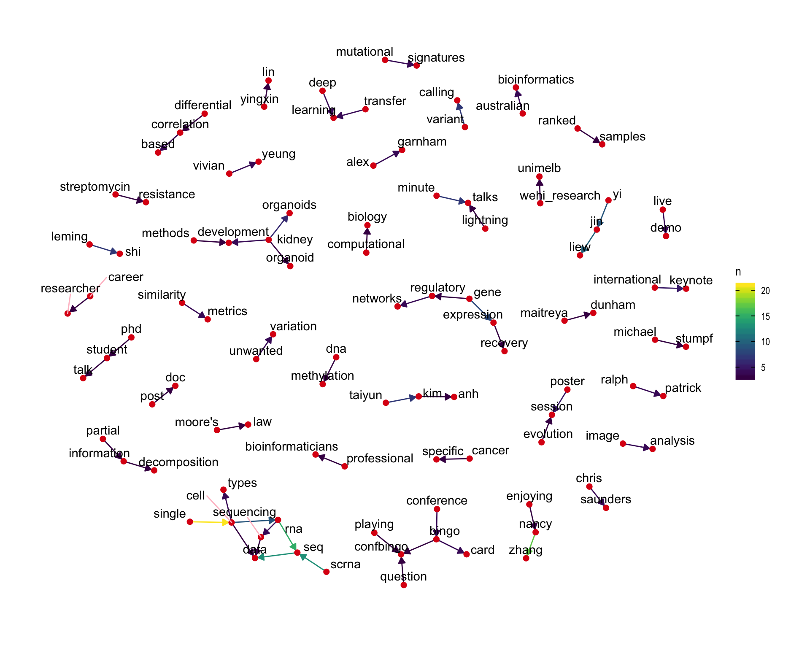
8.3 Topic modelling
Top 10 words associated with 6 topics identified by LDA.
8.3.1 Representative tweets
Most representative tweets for each topic
Topic 1
| screen_name | text | gamma |
|---|---|---|
| carsweshau | Maitreya Dunham on rich genomic datasets and thinking about CNV (causative? drivers?) in human disease (aneuploidy, cancer, complex disease). Yeast as a relevant system owing to CNVs affecting many traits in yeast, can perform experimental evolution in a chemostat #abacbs2018 | 0.9920590 |
| mritchieau | Leming Shi tells us about MAQC/SEQC projects: huge collaboration that used RNA mixtures to compare gene expression technologies and analysis methods. A valuable resource for the research community. Extending to biomarker analysis at present - hoping to publish soon #abacbs2018 https://t.co/BN8LAV8I0C | 0.9917566 |
| CFlensburg |
#abacbs18 (aka #abacbs2018) going down this week, conference starting tomorrow, and I’ll try to live report a bit. Program here: https://t.co/CmbEoA7kJX Feel free to follow/filter/unfollow/mute/block/report as you feel appropriate. For other live tweeps: @TweetDeck is awesome. |
0.9910770 |
| mritchieau | ⁦@DunhamLab⁩ improved upon results from DNAcopy to segment data along the genome in collaboration with statisticians ⁦@daniela_witten⁩ and Lucy Gao. Applied 1D Fused Lasso to help distinguish between ‘steppy’ or linear models and map driver genes #abacbs2018 https://t.co/UdxjsF4j23 | 0.9910770 |
| shazanfar |
#abacbs2018 For those wanting a head-start (or attending other sessions), all BioC Asia ClassifyR workshop material is on the Github: Used tomorrow (90mins): https://t.co/P83l9Q8AeB Prior workshop with more background on classification methods (3hr): https://t.co/EUs9HoOT19 |
0.9893152 |
| methylnick | Twas a brilliant talk and controls are fundamental to any interpretation of genomic data. It’s a slow adoption but my colleagues are starting to listen. #abacbs2018 #reproducibility #controls #referenceMaterial https://t.co/49SqJRvO0v | 0.9874581 |
| ramialison_lab | @BelindaPhipson @WEHI_research @unimelb Childcare onsite is the best at a conference… mum and dad could enjoy all sessions… bub even wanted his own #abacbs2018 badge ;) Thanks a million @abacbs @WEHI_research @unimelb and @claresloggett https://t.co/021or95w3K | 0.9866867 |
| mritchieau | Charity Law is unwell, so won’t be presenting at #abacbs2018, but you can read about her work on exploring intron signal at https://t.co/ip7TMoN34f. On the upside, the morning session is now back on time :) Get well soon Charity! https://t.co/lBrXREjZ4e | 0.9848195 |
| aljabadi | Nancy Zhang explains how predictable genes can be trusted in their approach to sc gene expression recovery, aka imputation. #SAVER #abacbs2018 | 0.9848195 |
| lazappi | Ann-Marie plots walking us through the challenges of cancer genomics, different types of variants, tumour heterogeneity, challenges related to therapy. #abacbs2018 | 0.9848195 |
Topic 2
| screen_name | text | gamma |
|---|---|---|
| sydneybioinfo | Hearing from fantastic @sydneybioinfo (1st yr PhD student) @LinYingxin scMerge: Integration of multiple single-cell transcriptomics datasets leveraging stable expression and pseudo-replication. Motivated by real issues with integrating developmental liver scRNA-Seq #abacbs2018 | 0.9917566 |
| cabbagesofdoom | @koadman wrt your repeat % Q: v. low gaps levels but also smaller assemblies for the other snake genomes analysed. Will need to dig deeper to tell missing data from possible 10x repeat over-assembly artefact. Are we repeating repeats? #ABACBS2018 #QandA | 0.9898178 |
| marialenagr | Learning about the evolution of single cell RNA-seq in a presentation delivered by international keynote speaker Dr Nancy Zhang. Single cell is currently a hot hot hot topic. #ABACBS2018 @abacbs https://t.co/NeKLs4iNVd | 0.9898178 |
| mritchieau | ⁦@theosysbio:⁩ mutual information, in particular partial information decomposition works better for network reconstruction. Nice results on neuronal differentiation published in Stumpf PS et al. (2017) https://t.co/0WxhlEoTsP - first author is a long lost cousin :) #abacbs2018 https://t.co/M0qYvOvTr4 | 0.9893152 |
| hdashnow | Yingxin Lin: Unlike bulk RNA-seq, by definition in single cell RNA-seq the cells do not have replications. So we need pseudo-replicates - use cells of the same cell type from different batches #ABACBS2018 | 0.9887605 |
| minouye271 |
If anyone at #abacbs2018 is looking for a postdoc in multiomics or polygenic risk scores in Aus or UK, feel free to DM/email me. The @CamBakerSGI is recruiting at both its @BakerResearchAu & @Cambridge_Uni nodes. Eg https://t.co/oJ3a6ytDBK More info at https://t.co/R5AQWPf89N |
0.9887605 |
| shazanfar | #abacbs2018 hearing from @S_Foroutan on singscore, method to estimate truly single sample gene set/pathway scores. These are useful for building interpretable and stable features for cohort-independent and prospective learning. | 0.9881449 |
| aljabadi |
Leming Shi explains how lucky we are working in life sciences with a lot of things to discover compared to drug developers who have a rough path ahead until it a real difference is made. #PrecisionMedicine #abacbs2018 https://t.co/9JAH8eFHXE |
0.9881449 |
| sydneybioinfo | Taiyun Kim, PhD student working with @PengyiYang82 and @jeanyang21 at @sydneybioinfo is presenting his work on the impact of similarity metrics on clustering single cell transcriptional data. Paper: https://t.co/WGWXPgZR6p #abacbs2018 | 0.9866867 |
| sydneybioinfo | Continuing with the strong @sydneybioinfo student presentations we have @KevinWang009 presenting work on RUV-Pro: Removing unwanted variation in prospective experiments to enable stable risk prediction #abacbs2018 | 0.9858143 |
Topic 3
| screen_name | text | gamma |
|---|---|---|
| carsweshau | Yi Jin Liew with epigenetic adaptation of corals to ocean acidification. Corals are very important to oceanic ecosystems, so relevant to know effects of rising temperatures etc. on coral. Chances are in humans, a random CpG site will be methylated. Coral, not so! #abacbs2018 | 0.9906933 |
| paulfharrison |
.@dunhamlab looking at driver genes vs larger regions of fitness of genes with 1D fused LASSO at #abacbs2018 (if I’m understanding correctly). Hearing LASSO these days I wonder if Elastic-Net can be used, here would give intermediates between stepwise and smooth curve fit. |
0.9898178 |
| DunhamLab | I’m up first this morning at #abacbs2018! I’ll talk about “Drivers of aneuploidy and adaptation in yeast” focusing on a few datasets we’ve generated that I’d love to set this crowd loose on for more analysis. | 0.9881449 |
| mritchieau | Yi Jin Liew: coral CpG methylation is very different to patterns seen in mammals. Mostly occurs in gene bodies and much rarer (~ 7%) at CpG islands compared to humans (~ 60-80%) #abacbs2018 https://t.co/PjWS0noQZa | 0.9874581 |
| mritchieau | ⁦@DunhamLab⁩ uses a pooled approach to gather fitness measures in yeast and associate with changes in copy number using regression. Fun fact: barcoding pioneered by yeast geneticists in the ‘90s - now used by everyone #abacbs2018 https://t.co/idw6ib6mqc | 0.9874581 |
| shazanfar | #abacbs2018 @steman_research presenting work on ARMET (algorithm for resolving microenvironment transcriptomes). Passes on hierarchical structure of cell types rather than treating independently to deconvolute bulk transcriptomes | 0.9866867 |
| shazanfar | @davisjmcc @AliciaOshlack @talandrews @m_hemberg I’m intrigued by the correction applied for estimating the gene-gene correlation, am I right to assume it’s not just simply taking Pearson over the ‘recovered’ matrix? #ABACBS2018 | 0.9858143 |
| shazanfar | #abacbs2018 @DunhamLab describes using DNAcopy to sensitively identify ‘fitness breakpoints’ in ingeniously induced tiled aneuploidy in yeast. Learning so much yeast genetics/genomics right now! | 0.9858143 |
| paulfharrison | .@CFlensburg describing SuperFreq. Parallel plots of copy number and variant allele frequency. Both can be segmented, but it works better to do both simultaneously. A nice simple example of multi-task learning, maybe. #abacbs2018 | 0.9858143 |
| shazanfar | #abacbs2018 Li Jin Liew throws back to yesterday’s #COMBINE18 panel with sharing of workflows with DNA methylation analysis https://t.co/Fl1v7wDnNA | 0.9836746 |
Topic 4
| screen_name | text | gamma |
|---|---|---|
| lazappi | #ABACBS2018 Award Winners - Early-career researcher @BelindaPhipson - Open science @torstenseemann - Professional bioinformatics Alex Garnham - Mid-career researcher David Lynn - Senior research fellow Mark Ragan | 0.9887605 |
| frostickle |
Bioinformatics career panel time at #COMBINE18 with: @IBMResearch @bwgoudey @PeterMacCC @RoxaneLegaie @illumina @ctsa11 @QIMRBerghofer @IamAMP Good to see a balance in industry vs public hospital vs academic & also gender! #ABACBS2018 https://t.co/pzB2UfR6zw |
0.9881449 |
| sydneybioinfo | Several @sydneybioinfo members are in attendance at #abacbs2018 with talks + posters. Give these people a follow & come say Hi! @KevinWang009 Taiyun Kim (talk today), Hani Kim, @LinYingxin @rylmb1 @shazanfar @TheEllisPatrick Nick Canete, Heeva Baharlou, Kitty Lo, Dario Strbenac | 0.9881449 |
| aljabadi | An end-of-the-day shout out to Dr Leming Shi for - IMO - one if the most passionate talks which still gets me thinking about how imperative it is to be focussed on standardisation of the methods we use in order to facilitate their applications. #abacbs2018 https://t.co/RYXTwNJlqQ | 0.9866867 |
| RoxaneLegaie | ** Shaming Tweet Warning ** With over 50 people identifying as Professional Bioinformaticians in Australia, and most of them being from Melbourne‚Ķ How come it was only 5 of us at the Prof Bioinfo get together tonight?? ü§î Never mind, more food & drinks for us! üòú #abacbs2018 https://t.co/2W6euJ4JNz | 0.9866867 |
| LonsBio | Woah! DeepVariant turns variant calling into an image deep learning problem! Mind blown! Wonder what other kinds of bioinformatics problems could use visualisation images as input? #abacbs2018 https://t.co/HoTm8aHcB4 https://t.co/E4ivuw8RLa | 0.9866867 |
| lazappi | Bit late but analysis of Twitter activity from #abacbs2018 Day 1 (and a bit) https://t.co/W4dPBrQ4Tb. Keep tweeting links to add software to the list (not sure I can get to all the posters today) | 0.9848195 |
| JoeCursons | The #ABACBS2018 professional bioinformatics award given to Alex Garnham - well deserved as the powerhouse of the @WEHI_research bioinformatics service unit and the saviour of many @WEHI_Postdocs with data to analyse! | 0.9848195 |
| lnly0311 | Chris Saunders giving a talk about Improving sequence analysis to increase the clinical value of whole genome sequencing. #abacbs2018 - “Not using JAVA” - people clapping | 0.9848195 |
| methylnick | Another take on the Moore’s Law plot. Chris Saunders from @illumina #abacbs2018 Compute and runtime important considerations for tools to get to result. https://t.co/HwWo0Bzkux | 0.9823430 |
Topic 5
| screen_name | text | gamma |
|---|---|---|
| carsweshau | Stephen J. Bent has a story of four moths and working on ancient DNA samples (characteristic damage would be lots of cytosine deamination, base oxidation of purines, shorter fragments). One of these moth samples is almost 100 years old! C>T & G>A at ends is the hint! #abacbs2018 | 0.9902752 |
| shazanfar | #abacbs2018 Kim-Anh Do now speaking about PRECISE, Personalised cancer-specific integrated estimation. Two main aims in personalised medicine: build more accurate understanding of individual patients, and introduce adaptive treatments to individuals | 0.9902752 |
| _hollywhitfield |
To account for individual variability, and administer the correct interventions Kim-An Do is producing integrated networks: Interaction databases + data -> patient-specific networks #abacbs2018 #ABACBS18 |
0.9881449 |
| _VickiJackson | #abacbs2018 finished for another year. Great speaking to @egiannoulatou lab members about challenges in sequencing studies. Unrelated to current work, but also enjoyed talk by @DoktrNick on imaging of developing kidney (reminded me of my previous work in the world of lungs!) | 0.9881449 |
| annaquagli | Clare Sloggert presenting Reduce to visualise high dimensional data interactively! Written with Plotly Dash: code in #python üêçand create great web-apps based on #JavaScript #abacbs2018 | 0.9874581 |
| aljabadi |
Richard Edwards on promise of 10x Chromium’s Diploid Phasing to perform comparable to long-read technologies at the cost of short read ones by #demultiplexing using #SNPs. #abacbs2018 https://t.co/ZPinB1tqFB |
0.9874581 |
| mritchieau | ⁦@DoktrNick⁩ shows us a beautiful visualisation of kidney development as a tree, reconstructed from imaging data. Informed development of a generative growth model for this process #abacbs2018 https://t.co/ZjKFVPAziw | 0.9866867 |
| lazappi | BP: Batch to batch variability can be explained by relative maturity of organoids. This can be applied to a disease modelling experiment using a patient mutation and corrected line. #abacbs2018 | 0.9866867 |
| LonsBio | Application of @bphipson variability results in patient corrected iPSC cells work from @kidney_tom et al, filtering out highly variable genes for DE analysis https://t.co/DjoBK5l47n #ABACBS2018 | 0.9866867 |
| kizza_a | hey @CFlensburg didnt get to ask at qanda. do you have to be careful with cnv on RNAseq if the samples were pooled? got caught out by pooled mice calling variants on RNAseq #abacbs2018 | 0.9848195 |
Topic 6
| screen_name | text | gamma |
|---|---|---|
| aljabadi | Taiyun Kim explains how #kmeans clustering performed better when using correlation-based similarity measures (Pearson and Spearman) than when distance-based ones were used considering pre-defined labels. #confBingo #abacbs2018 https://t.co/lZLQXG0w31 | 0.9887605 |
| davisjmcc | .@TonyPapenfuss rightly acknowledges outstanding support from sponsors to enable provision of childcare at #ABACBS2018. Really important initiative to make it easier for parents to attend the conference! Let’s push to make this a normal provision for conferences. | 0.9881449 |
| AliciaOshlack | There are several reasons why rare disease cases remain undiagnosed: 1) variant of unknown significance (lots of work happening here) 2) variants we still don’t have tools (methods, technology)to detect 3) not genetic My lab is interested in 2) #abacbs2018 | 0.9874581 |
| YiwenWang_Eva | Glad that people are interested in how to select methods to adjust for batch effect, even though not for microbiome data. I got many good questions and suggestions today! #abacbs2018 @tpq__ @annaquagli @mritchieau Thanks for the picture from my friends! @youyupei @jiaan_yu https://t.co/WlsNTT6gCx | 0.9866867 |
| RoxaneLegaie | Professional Bioinformaticians attending #abacbs2018 (#abacbs18) Join us for the social event at the Shaw Davey Slum after the @abacbs opening ceremony tonight! https://t.co/CmWQ4RMjAO | 0.9836746 |
| _hollywhitfield | A very well explained maths-y talk by Vivian Yeung. I’m impressed that post-5pm Holly can understand all of this, great job! #abacbs2018 #ABACBS18 https://t.co/w8JfBQyKIo | 0.9836746 |
| mdziemann | Thanks to everyone who visited my #ABACBS2018 poster today to discuss bulk reprocessing of RNA-seq data. ICYMI I’ve posted the PDF online https://t.co/eDhYwskgml | 0.9836746 |
| shazanfar | #abacbs2018 superFreq RNA-Seq doesn’t require matched normals for estimating CNV, but requires at least some normals as a reference @CFlensburg https://t.co/wk6PNl2mRZ | 0.9823430 |
| hdashnow | @egiannoulatou: Theme of today - short variant calling is not a solved problem! Most callers assume reads have independent errors, but this isn’t true! #abacbs2018 | 0.9823430 |
| AliciaOshlack |
Conference bingo prizes up for grabs. Get your bingo card here. Good luck #confBingo #abacbs2018 #ABACBS18 https://t.co/TsHcgYWIiU https://t.co/EciRSAmGXA |
0.9807748 |
9 Software
Software mentioned in Tweets with links to GitHub, BitBucket, Bioconductor or CRAN.
Session info
## R version 3.6.0 (2019-04-26)
## Platform: x86_64-w64-mingw32/x64 (64-bit)
## Running under: Windows 10 x64 (build 17134)
##
## Matrix products: default
##
## locale:
## [1] LC_COLLATE=English_Australia.1252 LC_CTYPE=English_Australia.1252
## [3] LC_MONETARY=English_Australia.1252 LC_NUMERIC=C
## [5] LC_TIME=English_Australia.1252
##
## attached base packages:
## [1] stats graphics grDevices utils datasets methods base
##
## other attached packages:
## [1] fs_1.3.1 here_0.1 knitr_1.23
## [4] magick_2.0 webshot_0.5.1 viridis_0.5.1
## [7] viridisLite_0.3.0 wordcloud_2.6 RColorBrewer_1.1-2
## [10] ggraph_1.0.2 ggrepel_0.8.1 ggplot2_3.2.0
## [13] topicmodels_0.2-8 tidytext_0.2.1 igraph_1.2.4.1
## [16] stringr_1.4.0 purrr_0.3.2 forcats_0.4.0
## [19] lubridate_1.7.4 tidyr_0.8.3 dplyr_0.8.3
## [22] rtweet_0.6.9
##
## loaded via a namespace (and not attached):
## [1] httr_1.4.0 jsonlite_1.6 assertthat_0.2.1
## [4] askpass_1.1 highr_0.8 stats4_3.6.0
## [7] yaml_2.2.0 slam_0.1-45 pillar_1.4.2
## [10] backports_1.1.4 lattice_0.20-38 glue_1.3.1
## [13] digest_0.6.20 polyclip_1.10-0 colorspace_1.4-1
## [16] htmltools_0.3.6 Matrix_1.2-17 plyr_1.8.4
## [19] tm_0.7-6 pkgconfig_2.0.2 scales_1.0.0
## [22] processx_3.3.1 tweenr_1.0.1 ggforce_0.2.2
## [25] tibble_2.1.3 openssl_1.4 generics_0.0.2
## [28] farver_1.1.0 withr_2.1.2 lazyeval_0.2.2
## [31] cli_1.1.0 NLP_0.2-0 magrittr_1.5
## [34] crayon_1.3.4 evaluate_0.14 ps_1.3.0
## [37] tokenizers_0.2.1 janeaustenr_0.1.5 fansi_0.4.0
## [40] SnowballC_0.6.0 MASS_7.3-51.4 xml2_1.2.0
## [43] tools_3.6.0 munsell_0.5.0 callr_3.2.0
## [46] compiler_3.6.0 rlang_0.4.0 grid_3.6.0
## [49] labeling_0.3 rmarkdown_1.13 gtable_0.3.0
## [52] curl_3.3 reshape2_1.4.3 R6_2.4.0
## [55] gridExtra_2.3 zeallot_0.1.0 utf8_1.1.4
## [58] rprojroot_1.3-2 modeltools_0.2-22 stringi_1.4.3
## [61] parallel_3.6.0 Rcpp_1.0.1 vctrs_0.1.0
## [64] tidyselect_0.2.5 xfun_0.8